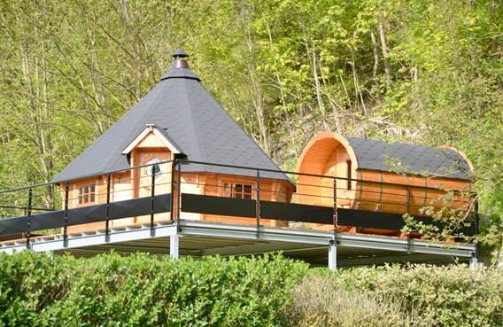
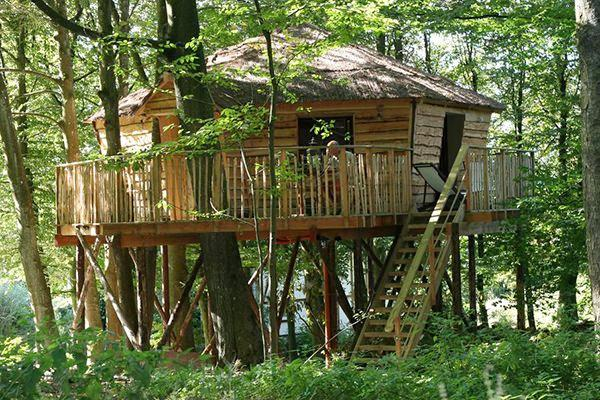

Aan de Semoy
Cabanes du Vichaux
In Tournavaux, op een steenworp van de rivier: hutten voor twee of voor het hele gezin, midden in de natuur van de Franse Ardennes.
Ardennen · Bijzonder overnachten
Wie heeft er nooit gedroomd van een nacht in een boomhut? In de Ardennen kan het echt — dit is onze selectie, van sober tot verrassend comfortabel.
Onze selectie
In Tournavaux, op een steenworp van de rivier: hutten voor twee of voor het hele gezin, midden in de natuur van de Franse Ardennes.

Een grote Finse kota mét sauna in de Crêtes Pré-Ardennaises — noordelijke sferen tussen onbekende dorpjes.

De "hut van het slapende woud", in een van de mooiste bossen van Wallonië — mét wc en douche.

Kaarsen en petroleumlampen, een ouderwets fornuis en de rivier naast de deur — een nacht in een andere tijd.
Reserveren doe je rechtstreeks bij de uitbater. De volledige top met alle adressen staat op de huidige pagina.
De boomhut is de klassieker, maar niet de enige manier om anders te slapen in de Ardennen.